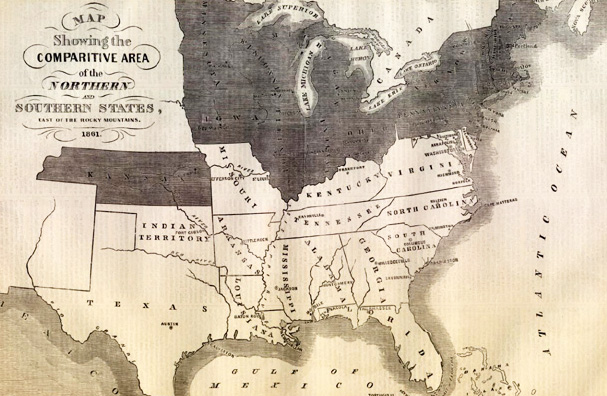

|
The Mason-Dixon line was the result of a 1760s survey which
resolved a boundary dispute between the Penn family, the
founders of the Pennsylvania colony, and the Calvert family,
who founded Maryland. While the line is technically the
northern boundary of Maryland, it has had greater
significance as a legal and cultural divide. During the
antebellum years, the line signified the division between
|

This 1861 map shows how the Mason-Dixon line
was understood at the start of the Civil War.
|
the slave South and the free North. After the Civil War,
the line continued to denote a cultural and emotional
boundary between North and South.
After three generations of boundary disputes, the Penn
and Calvert families hired British surveyors Charles Mason
and Jeremiah Dixon, who used celestial navigation tools from
1765 - 1768 to mark a negotiated latitudinal boundary
between Pennsylvania and Maryland at 39 degrees, 43 minutes,
17.4 seconds north. Once set, the Mason-Dixon line became a
significant American demarcation line.
Previously referred to by Thomas Jefferson as the
geographical line that reflected a moral and political
divide, the Mason-Dixon line became the symbolic division
between free states and slave states during the
Congressional debates over the Missouri compromise of 1820.
The line represented freedom for escaped slaves, and free
African-Americans and escaped slaves formed communities
north of the line. As with many boundary areas, pro-slavery
and abolitionist views existed on both sides. Slave
catchers had allies in Pennsylvania while sympathetic
Maryland residents assisted runaway slaves. Especially
after the Fugitive Slave Act of 1850, the area saw activity
by both the Underground Railroad and slave catchers.
However, the Mason-Dixon line was not the boundary
between the Union and the Confederacy. While Maryland
allowed slavery and contained many Confederate sympathizers,
it remained part of the Union. The only battle fought north
of the line was the Battle of Gettysburg in July 1863.
After the Civil War, the Mason-Dixon line had diminished
legal significance but retained its symbolic role as the
cultural division between North and South.
Source: Joan Waugh, ed., Facts on File Encyclopedia of American
History: Civil War and Reconstruction, 1856 to 1869 (New York: Facts on
File, 2003), 224.
|